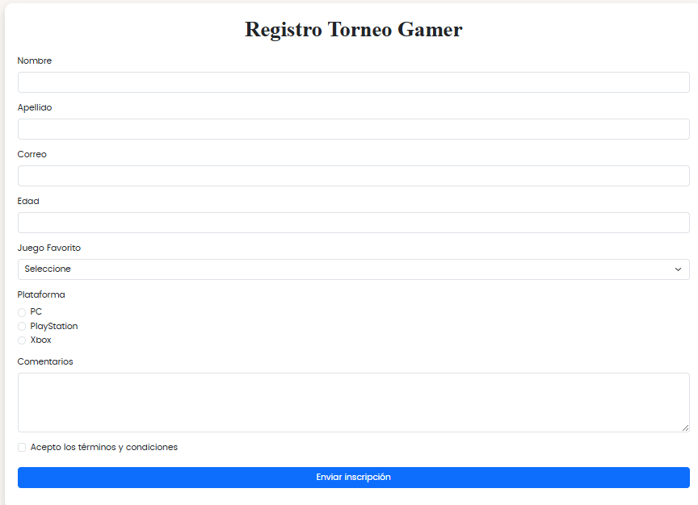
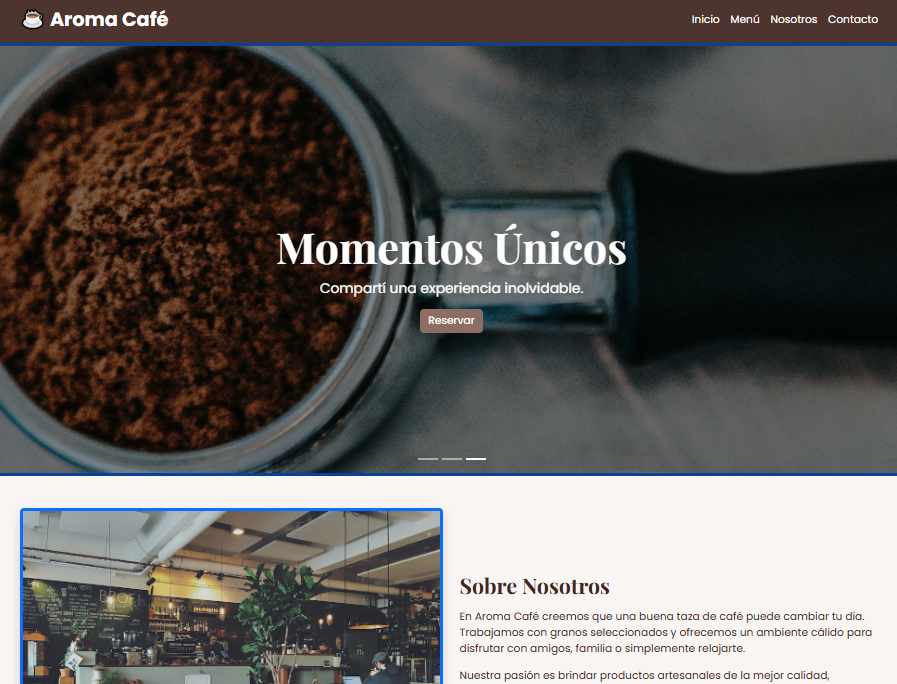
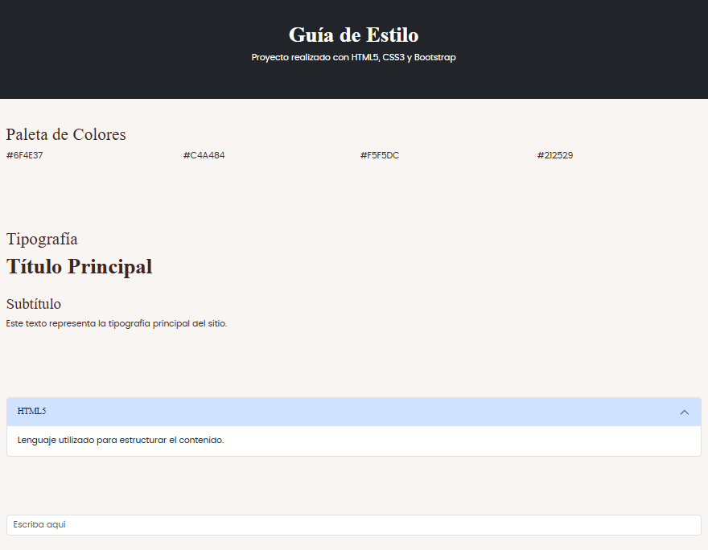
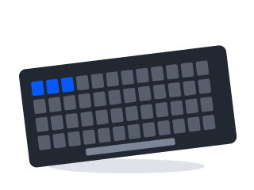

Ideas que se
convierten en
código.
Proyectos simples, útiles y hechos con mucho aprendizaje.
Explorar proyectosProyectos
Abrir portafolio del TP 2 actualizado → Ver CV

Formulario gamer
Formulario de inscripción del TP 2 con validaciones de datos.

Aroma Café
Landing page del TP 2 con carrusel, menú y modal.

Guía de estilo
Colores, tipografías y componentes del proyecto anterior.

TecnoStore
Catálogo de accesorios de computación con buscador, filtros y carrito de compras.
Adiviná el número
Un número secreto, tres dificultades y una nueva oportunidad en cada partida.
Sobre mí
¡Hola! Soy Maximo Aceituno, estudiante de la Tecnicatura Superior en Desarrollo de Software en el Instituto Superior Manuel Belgrano.
Este portafolio reúne mis proyectos de los trabajos prácticos 2 y 3 de Práctica Profesionalizante I. En ellos trabajo la estructura, el diseño y la interacción de una aplicación web.
Bitácora de los proyectos
Trabajo individual. Responsable de las historias y de su implementación: Maximo Aceituno.
TecnoStore
- HU 01 · Explorar productos. Como visitante, quiero ver la imagen, el nombre y el precio de cada producto para comparar opciones.
Desarrollo: Organicé los datos en productos.json y generé una cuadrícula de seis tarjetas. Verificación: las seis tarjetas muestran sus datos e ilustraciones. - HU 02 · Consultar el detalle. Como visitante, quiero abrir la información de un producto sin salir del catálogo para revisar sus características.
Desarrollo: Agregué un cuadro modal con descripción, categoría, marca, precio y stock. Verificación: se abre desde la tarjeta y se cierra con el botón o Escape. - HU 03 · Buscar y filtrar. Como visitante, quiero buscar por nombre y combinar categoría, marca y precio para encontrar lo que necesito.
Desarrollo: Normalicé acentos y mayúsculas, utilicé coincidencias parciales y combiné los filtros. Verificación: ÓPTICO y optico encuentran el mismo producto; un filtro sin coincidencias muestra un mensaje. - HU 04 · Administrar el carrito. Como comprador, quiero cambiar cantidades y conocer el total sin superar el stock disponible.
Desarrollo: Guardé una cantidad por producto e implementé subtotales, total, eliminación, vaciado y persistencia local. Verificación: repetir un producto aumenta su cantidad; el incremento se bloquea al llegar al stock.
Adiviná el número
- HU 05 · Jugar con dificultad. Como jugador, quiero elegir un nivel, recibir pistas y volver a empezar para superar el desafío.
Desarrollo: Programé tres niveles, número aleatorio, historial, mensajes de victoria y derrota y reinicio. Separé los estilos en estilos.css. Verificación: las entradas inválidas y repetidas no consumen intentos; acertar en el último intento produce victoria; cambiar de nivel limpia la partida.
Portafolio
- HU 06 · Acceder a los proyectos. Como visitante, quiero abrir cada proyecto desde una portada para recorrer el trabajo.
Desarrollo: Incorporé fichas, navegación compartida, retorno a la portada y esta bitácora. Verificación: ambos enlaces abren el ejercicio correspondiente y las tres páginas se adaptan a celulares.